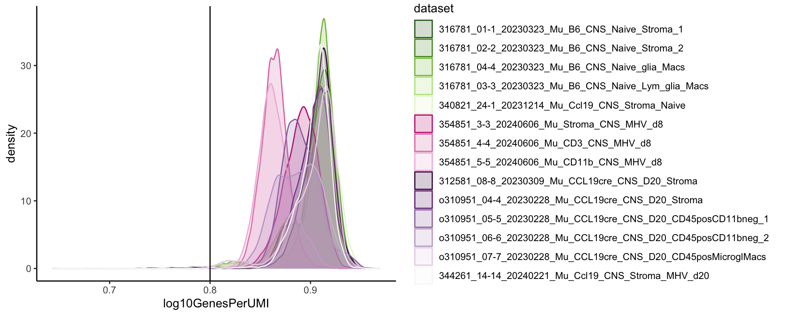

merge and quality control
2024-04-09
Last updated: 2024-08-09
Checks: 6 1
Knit directory: CNS Fibroblast Immune
Surveillance/
This reproducible R Markdown analysis was created with workflowr (version 1.7.1). The Checks tab describes the reproducibility checks that were applied when the results were created. The Past versions tab lists the development history.
The R Markdown is untracked by Git. To know which version of the R
Markdown file created these results, you’ll want to first commit it to
the Git repo. If you’re still working on the analysis, you can ignore
this warning. When you’re finished, you can run
wflow_publish to commit the R Markdown file and build the
HTML.
Great job! The global environment was empty. Objects defined in the global environment can affect the analysis in your R Markdown file in unknown ways. For reproduciblity it’s best to always run the code in an empty environment.
The command set.seed(20240724) was run prior to running
the code in the R Markdown file. Setting a seed ensures that any results
that rely on randomness, e.g. subsampling or permutations, are
reproducible.
Great job! Recording the operating system, R version, and package versions is critical for reproducibility.
Nice! There were no cached chunks for this analysis, so you can be confident that you successfully produced the results during this run.
Great job! Using relative paths to the files within your workflowr project makes it easier to run your code on other machines.
Great! You are using Git for version control. Tracking code development and connecting the code version to the results is critical for reproducibility.
The results in this page were generated with repository version d415bd4. See the Past versions tab to see a history of the changes made to the R Markdown and HTML files.
Note that you need to be careful to ensure that all relevant files for
the analysis have been committed to Git prior to generating the results
(you can use wflow_publish or
wflow_git_commit). workflowr only checks the R Markdown
file, but you know if there are other scripts or data files that it
depends on. Below is the status of the Git repository when the results
were generated:
Ignored files:
Ignored: .DS_Store
Ignored: .Rhistory
Ignored: .Rproj.user/
Ignored: analysis/.DS_Store
Ignored: analysis/.Rhistory
Untracked files:
Untracked: analysis/T_cell_annotation.Rmd
Untracked: analysis/cellchat_EndC.Rmd
Untracked: analysis/cellchat_analysis.Rmd
Untracked: analysis/cluster_annotation.Rmd
Untracked: analysis/endothelial_cell_annotation.Rmd
Untracked: analysis/fibroblast_annotation.Rmd
Untracked: analysis/fibroblast_gene_expression_anaylsis.Rmd
Untracked: analysis/merge_and_QC.Rmd
Unstaged changes:
Modified: analysis/index.Rmd
Note that any generated files, e.g. HTML, png, CSS, etc., are not included in this status report because it is ok for generated content to have uncommitted changes.
There are no past versions. Publish this analysis with
wflow_publish() to start tracking its development.
load packages
suppressPackageStartupMessages({
library(Seurat)
library(here)
library(ggplot2)
library(ggrepel)
library(RColorBrewer)
library(magrittr)
library(dplyr)
})load files
basedir <- here()
mergeSObj <- function(datasets){
a <- readRDS(file = paste0(basedir, "/data/", datasets[1], "_seurat.rds"))
print(datasets[1])
for (i in 2:(length(datasets))){
b <- readRDS(file = paste0(basedir, "/data/", datasets[i], "_seurat.rds"))
print(datasets[i])
a <- merge(a,b)
}
print("merged")
return(a)
}
#naive
datasets_d0 <- c("316781_01-1_20230323_Mu_B6_CNS_Naive_Stroma_1",
"316781_02-2_20230323_Mu_B6_CNS_Naive_Stroma_2",
"316781_04-4_20230323_Mu_B6_CNS_Naive_glia_Macs",
"316781_03-3_20230323_Mu_B6_CNS_Naive_Lym_glia_Macs",
"340821_24-1_20231214_Mu_Ccl19_CNS_Stroma_Naive")
seurat_d0 <- mergeSObj(datasets_d0)[1] "316781_01-1_20230323_Mu_B6_CNS_Naive_Stroma_1"
[1] "316781_02-2_20230323_Mu_B6_CNS_Naive_Stroma_2"
[1] "316781_04-4_20230323_Mu_B6_CNS_Naive_glia_Macs"
[1] "316781_03-3_20230323_Mu_B6_CNS_Naive_Lym_glia_Macs"
[1] "340821_24-1_20231214_Mu_Ccl19_CNS_Stroma_Naive"
[1] "merged"#d8
datasets_d8 <- c("354851_3-3_20240606_Mu_Stroma_CNS_MHV_d8",
"354851_4-4_20240606_Mu_CD3_CNS_MHV_d8",
"354851_5-5_20240606_Mu_CD11b_CNS_MHV_d8")
seurat_d8 <- mergeSObj(datasets_d8)[1] "354851_3-3_20240606_Mu_Stroma_CNS_MHV_d8"
[1] "354851_4-4_20240606_Mu_CD3_CNS_MHV_d8"
[1] "354851_5-5_20240606_Mu_CD11b_CNS_MHV_d8"
[1] "merged"#d20
datasets_d20 <- c("312581_08-8_20230309_Mu_CCL19cre_CNS_D20_Stroma",
"o310951_04-4_20230228_Mu_CCL19cre_CNS_D20_Stroma",
"o310951_05-5_20230228_Mu_CCL19cre_CNS_D20_CD45posCD11bneg_1",
"o310951_06-6_20230228_Mu_CCL19cre_CNS_D20_CD45posCD11bneg_2",
"o310951_07-7_20230228_Mu_CCL19cre_CNS_D20_CD45posMicroglMacs",
"344261_14-14_20240221_Mu_Ccl19_CNS_Stroma_MHV_d20")
seurat_d20 <- mergeSObj(datasets_d20)[1] "312581_08-8_20230309_Mu_CCL19cre_CNS_D20_Stroma"
[1] "o310951_04-4_20230228_Mu_CCL19cre_CNS_D20_Stroma"
[1] "o310951_05-5_20230228_Mu_CCL19cre_CNS_D20_CD45posCD11bneg_1"
[1] "o310951_06-6_20230228_Mu_CCL19cre_CNS_D20_CD45posCD11bneg_2"
[1] "o310951_07-7_20230228_Mu_CCL19cre_CNS_D20_CD45posMicroglMacs"
[1] "344261_14-14_20240221_Mu_Ccl19_CNS_Stroma_MHV_d20"
[1] "merged"merge files
seurat_d0$timepoint <- "d0"
seurat_d8$timepoint <- "d8"
seurat_d20$timepoint <- "d20"
seurat <- merge(seurat_d0, y= c(seurat_d8, seurat_d20))
seurat$timepoint <- factor(seurat$timepoint, levels = c("d0", "d8", "d20"))
table(seurat$dataset, seurat$timepoint)
d0 d8 d20
312581_08-8_20230309_Mu_CCL19cre_CNS_D20_Stroma 0 0 2569
316781_01-1_20230323_Mu_B6_CNS_Naive_Stroma_1 1782 0 0
316781_02-2_20230323_Mu_B6_CNS_Naive_Stroma_2 1941 0 0
316781_03-3_20230323_Mu_B6_CNS_Naive_Lym_glia_Macs 6603 0 0
316781_04-4_20230323_Mu_B6_CNS_Naive_glia_Macs 8311 0 0
340821_24-1_20231214_Mu_Ccl19_CNS_Stroma_Naive 5487 0 0
344261_14-14_20240221_Mu_Ccl19_CNS_Stroma_MHV_d20 0 0 5665
354851_3-3_20240606_Mu_Stroma_CNS_MHV_d8 0 3382 0
354851_4-4_20240606_Mu_CD3_CNS_MHV_d8 0 9087 0
354851_5-5_20240606_Mu_CD11b_CNS_MHV_d8 0 6308 0
o310951_04-4_20230228_Mu_CCL19cre_CNS_D20_Stroma 0 0 3446
o310951_05-5_20230228_Mu_CCL19cre_CNS_D20_CD45posCD11bneg_1 0 0 9508
o310951_06-6_20230228_Mu_CCL19cre_CNS_D20_CD45posCD11bneg_2 0 0 8027
o310951_07-7_20230228_Mu_CCL19cre_CNS_D20_CD45posMicroglMacs 0 0 9075rm(seurat_d20)
rm(seurat_d0)
rm(seurat_d8)quality control
cell count dataset
coldataset <- c((brewer.pal(11, "PiYG")[c(11,10,9,8,7,2,3,4)]),
(brewer.pal(11, "PRGn")[c(1,2,3,4,5,6)]))
names(coldataset) <- c(datasets_d0, datasets_d8, datasets_d20)
seurat$dataset <- factor(seurat$dataset, levels = c(datasets_d0, datasets_d8, datasets_d20))
cell_count <- data.frame(table(seurat$dataset))
colnames(cell_count) <- c("dataset", "count")
hsize <- 1.5
ggplot(cell_count, aes(x = hsize, y = count, fill = dataset)) +
scale_fill_manual(values = coldataset) +
geom_col(color = "white") +
coord_polar(theta = "y") +
xlim(c(0.2, hsize + 0.5)) +
theme_void() +
ggtitle("dataset_count") +
theme(plot.title = element_text(hjust = 0.5, size = 15)) +
geom_text(aes(label = count), position = position_stack(vjust = 0.5))
cell count timepoint
coltimepoint <- c((brewer.pal(11, "PiYG")[c(9,3)]),
(brewer.pal(11, "PRGn")[c(3)]))
names(coltimepoint) <- unique(seurat$timepoint)
cell_count <- data.frame(table(seurat$timepoint))
colnames(cell_count) <- c("timepoint", "count")
hsize <- 1.5
ggplot(cell_count, aes(x = hsize, y = count, fill = timepoint)) +
scale_fill_manual(values = coltimepoint) +
geom_col(color = "white") +
coord_polar(theta = "y") +
xlim(c(0.2, hsize + 0.5)) +
theme_void() +
ggtitle("timepoint_count") +
theme(plot.title = element_text(hjust = 0.5, size = 15), legend.position = "bottom") +
geom_text(aes(label = count), position = position_stack(vjust = 0.5))
nUMIs
seurat$log10GenesPerUMI <- log10(seurat$nFeature_RNA)/log10(seurat$nCount_RNA)
meta_data <- seurat@meta.data
meta_data <- meta_data %>%
dplyr::rename(nUMI = nCount_RNA,
nGene = nFeature_RNA)
# Visualize the number UMIs/transcripts per cell
meta_data %>%
ggplot(aes(color= dataset, x=nUMI, fill= dataset)) +
geom_density(alpha = 0.2) +
scale_fill_manual(values = coldataset) +
scale_color_manual(values = coldataset) +
scale_x_log10() +
theme_classic() +
ylab("Cell density") +
geom_vline(xintercept = 500)
nGenes
# Visualize the distribution of genes detected per cell via histogram
meta_data %>%
ggplot(aes(color=dataset, x=nGene, fill= dataset)) +
geom_density(alpha = 0.2) +
scale_fill_manual(values = coldataset) +
scale_color_manual(values = coldataset) +
theme_classic() +
scale_x_log10() +
geom_vline(xintercept = 300)
complexity
# Visualize the overall complexity of the gene expression by visualizing the genes detected per UMI (novelty score)
meta_data %>%
ggplot(aes(x=log10GenesPerUMI, color = dataset, fill=dataset)) +
geom_density(alpha = 0.2) +
scale_fill_manual(values = coldataset) +
scale_color_manual(values = coldataset) +
theme_classic() +
geom_vline(xintercept = 0.8)
mitochondrial gene counts ratio
# Visualize the distribution of mitochondrial gene expression detected per cell
meta_data %>%
ggplot(aes(color=dataset, x=subsets_Mt_percent, fill=dataset)) +
geom_density(alpha = 0.2) +
scale_fill_manual(values = coldataset) +
scale_color_manual(values = coldataset) +
scale_x_log10() +
theme_classic() +
geom_vline(xintercept = 0.2)
UMAPs merged file
processing <- function(seurat){
seurat <- NormalizeData(object = seurat)
seurat <- FindVariableFeatures(object = seurat)
seurat <- ScaleData(object = seurat, verbose = FALSE)
seurat <- RunPCA(object = seurat, npcs = 30, verbose = FALSE, )
seurat <- RunUMAP(object = seurat, reduction = "pca", dims = 1:20)
res = c(0.25, 0.4, 0.6, 0.8)
seurat <- FindNeighbors(object = seurat, reduction = "pca", dims = 1:20)
for(i in 1:length(res)){
seurat <- FindClusters(object = seurat, resolution = res[i], random.seed = 1234)
}
return(seurat)
}
seurat <- processing(seurat)Modularity Optimizer version 1.3.0 by Ludo Waltman and Nees Jan van Eck
Number of nodes: 81191
Number of edges: 2622392
Running Louvain algorithm...
Maximum modularity in 10 random starts: 0.9661
Number of communities: 24
Elapsed time: 20 seconds
Modularity Optimizer version 1.3.0 by Ludo Waltman and Nees Jan van Eck
Number of nodes: 81191
Number of edges: 2622392
Running Louvain algorithm...
Maximum modularity in 10 random starts: 0.9550
Number of communities: 28
Elapsed time: 23 seconds
Modularity Optimizer version 1.3.0 by Ludo Waltman and Nees Jan van Eck
Number of nodes: 81191
Number of edges: 2622392
Running Louvain algorithm...
Maximum modularity in 10 random starts: 0.9409
Number of communities: 29
Elapsed time: 23 seconds
Modularity Optimizer version 1.3.0 by Ludo Waltman and Nees Jan van Eck
Number of nodes: 81191
Number of edges: 2622392
Running Louvain algorithm...
Maximum modularity in 10 random starts: 0.9292
Number of communities: 33
Elapsed time: 20 secondsIdents(seurat) <- seurat$RNA_snn_res.0.25
DimPlot(seurat, reduction = "umap", pt.size = 0.4)
DimPlot(seurat, reduction = "umap", group.by = "timepoint", cols = coltimepoint, pt.size = 0.4, shuffle = T)
save file
saveRDS(seurat, file = paste0(basedir, "/data/merged_samples_CNS.rds"))sessionInfo
sessionInfo()R version 4.4.1 (2024-06-14)
Platform: x86_64-apple-darwin20
Running under: macOS Sonoma 14.5
Matrix products: default
BLAS: /Library/Frameworks/R.framework/Versions/4.4-x86_64/Resources/lib/libRblas.0.dylib
LAPACK: /Library/Frameworks/R.framework/Versions/4.4-x86_64/Resources/lib/libRlapack.dylib; LAPACK version 3.12.0
locale:
[1] en_US.UTF-8/en_US.UTF-8/en_US.UTF-8/C/en_US.UTF-8/en_US.UTF-8
time zone: Europe/Berlin
tzcode source: internal
attached base packages:
[1] stats graphics grDevices utils datasets methods base
other attached packages:
[1] dplyr_1.1.4 magrittr_2.0.3 RColorBrewer_1.1-3 ggrepel_0.9.5 ggplot2_3.5.1
[6] here_1.0.1 Seurat_5.1.0 SeuratObject_5.0.2 sp_2.1-4
loaded via a namespace (and not attached):
[1] deldir_2.0-4 pbapply_1.7-2 gridExtra_2.3 rlang_1.1.4
[5] git2r_0.33.0 RcppAnnoy_0.0.22 spatstat.geom_3.3-2 matrixStats_1.3.0
[9] ggridges_0.5.6 compiler_4.4.1 png_0.1-8 vctrs_0.6.5
[13] reshape2_1.4.4 stringr_1.5.1 pkgconfig_2.0.3 fastmap_1.2.0
[17] labeling_0.4.3 utf8_1.2.4 promises_1.3.0 rmarkdown_2.27
[21] purrr_1.0.2 xfun_0.46 cachem_1.1.0 jsonlite_1.8.8
[25] goftest_1.2-3 highr_0.11 later_1.3.2 spatstat.utils_3.0-5
[29] irlba_2.3.5.1 parallel_4.4.1 cluster_2.1.6 R6_2.5.1
[33] ica_1.0-3 spatstat.data_3.1-2 bslib_0.7.0 stringi_1.8.4
[37] reticulate_1.38.0 spatstat.univar_3.0-0 parallelly_1.37.1 lmtest_0.9-40
[41] jquerylib_0.1.4 scattermore_1.2 Rcpp_1.0.13 knitr_1.48
[45] tensor_1.5 future.apply_1.11.2 zoo_1.8-12 sctransform_0.4.1
[49] httpuv_1.6.15 Matrix_1.7-0 splines_4.4.1 igraph_2.0.3
[53] tidyselect_1.2.1 abind_1.4-5 rstudioapi_0.16.0 yaml_2.3.9
[57] spatstat.random_3.3-1 spatstat.explore_3.3-1 codetools_0.2-20 miniUI_0.1.1.1
[61] listenv_0.9.1 plyr_1.8.9 lattice_0.22-6 tibble_3.2.1
[65] withr_3.0.0 shiny_1.8.1.1 ROCR_1.0-11 evaluate_0.24.0
[69] Rtsne_0.17 future_1.33.2 fastDummies_1.7.3 survival_3.7-0
[73] polyclip_1.10-7 fitdistrplus_1.2-1 pillar_1.9.0 KernSmooth_2.23-24
[77] plotly_4.10.4 generics_0.1.3 rprojroot_2.0.4 RcppHNSW_0.6.0
[81] munsell_0.5.1 scales_1.3.0 globals_0.16.3 xtable_1.8-4
[85] glue_1.7.0 lazyeval_0.2.2 tools_4.4.1 data.table_1.15.4
[89] RSpectra_0.16-2 RANN_2.6.1 fs_1.6.4 leiden_0.4.3.1
[93] dotCall64_1.1-1 cowplot_1.1.3 grid_4.4.1 tidyr_1.3.1
[97] colorspace_2.1-0 nlme_3.1-165 patchwork_1.2.0 cli_3.6.3
[101] spatstat.sparse_3.1-0 workflowr_1.7.1 spam_2.10-0 fansi_1.0.6
[105] viridisLite_0.4.2 uwot_0.2.2 gtable_0.3.5 sass_0.4.9
[109] digest_0.6.36 progressr_0.14.0 farver_2.1.2 htmlwidgets_1.6.4
[113] htmltools_0.5.8.1 lifecycle_1.0.4 httr_1.4.7 mime_0.12
[117] MASS_7.3-61 date()[1] "Fri Aug 9 14:11:48 2024"
sessionInfo()R version 4.4.1 (2024-06-14)
Platform: x86_64-apple-darwin20
Running under: macOS Sonoma 14.5
Matrix products: default
BLAS: /Library/Frameworks/R.framework/Versions/4.4-x86_64/Resources/lib/libRblas.0.dylib
LAPACK: /Library/Frameworks/R.framework/Versions/4.4-x86_64/Resources/lib/libRlapack.dylib; LAPACK version 3.12.0
locale:
[1] en_US.UTF-8/en_US.UTF-8/en_US.UTF-8/C/en_US.UTF-8/en_US.UTF-8
time zone: Europe/Berlin
tzcode source: internal
attached base packages:
[1] stats graphics grDevices utils datasets methods base
other attached packages:
[1] dplyr_1.1.4 magrittr_2.0.3 RColorBrewer_1.1-3 ggrepel_0.9.5 ggplot2_3.5.1
[6] here_1.0.1 Seurat_5.1.0 SeuratObject_5.0.2 sp_2.1-4
loaded via a namespace (and not attached):
[1] deldir_2.0-4 pbapply_1.7-2 gridExtra_2.3 rlang_1.1.4
[5] git2r_0.33.0 RcppAnnoy_0.0.22 spatstat.geom_3.3-2 matrixStats_1.3.0
[9] ggridges_0.5.6 compiler_4.4.1 png_0.1-8 vctrs_0.6.5
[13] reshape2_1.4.4 stringr_1.5.1 pkgconfig_2.0.3 fastmap_1.2.0
[17] labeling_0.4.3 utf8_1.2.4 promises_1.3.0 rmarkdown_2.27
[21] purrr_1.0.2 xfun_0.46 cachem_1.1.0 jsonlite_1.8.8
[25] goftest_1.2-3 highr_0.11 later_1.3.2 spatstat.utils_3.0-5
[29] irlba_2.3.5.1 parallel_4.4.1 cluster_2.1.6 R6_2.5.1
[33] ica_1.0-3 spatstat.data_3.1-2 bslib_0.7.0 stringi_1.8.4
[37] reticulate_1.38.0 spatstat.univar_3.0-0 parallelly_1.37.1 lmtest_0.9-40
[41] jquerylib_0.1.4 scattermore_1.2 Rcpp_1.0.13 knitr_1.48
[45] tensor_1.5 future.apply_1.11.2 zoo_1.8-12 sctransform_0.4.1
[49] httpuv_1.6.15 Matrix_1.7-0 splines_4.4.1 igraph_2.0.3
[53] tidyselect_1.2.1 abind_1.4-5 rstudioapi_0.16.0 yaml_2.3.9
[57] spatstat.random_3.3-1 spatstat.explore_3.3-1 codetools_0.2-20 miniUI_0.1.1.1
[61] listenv_0.9.1 plyr_1.8.9 lattice_0.22-6 tibble_3.2.1
[65] withr_3.0.0 shiny_1.8.1.1 ROCR_1.0-11 evaluate_0.24.0
[69] Rtsne_0.17 future_1.33.2 fastDummies_1.7.3 survival_3.7-0
[73] polyclip_1.10-7 fitdistrplus_1.2-1 pillar_1.9.0 KernSmooth_2.23-24
[77] plotly_4.10.4 generics_0.1.3 rprojroot_2.0.4 RcppHNSW_0.6.0
[81] munsell_0.5.1 scales_1.3.0 globals_0.16.3 xtable_1.8-4
[85] glue_1.7.0 lazyeval_0.2.2 tools_4.4.1 data.table_1.15.4
[89] RSpectra_0.16-2 RANN_2.6.1 fs_1.6.4 leiden_0.4.3.1
[93] dotCall64_1.1-1 cowplot_1.1.3 grid_4.4.1 tidyr_1.3.1
[97] colorspace_2.1-0 nlme_3.1-165 patchwork_1.2.0 cli_3.6.3
[101] spatstat.sparse_3.1-0 workflowr_1.7.1 spam_2.10-0 fansi_1.0.6
[105] viridisLite_0.4.2 uwot_0.2.2 gtable_0.3.5 sass_0.4.9
[109] digest_0.6.36 progressr_0.14.0 farver_2.1.2 htmlwidgets_1.6.4
[113] htmltools_0.5.8.1 lifecycle_1.0.4 httr_1.4.7 mime_0.12
[117] MASS_7.3-61